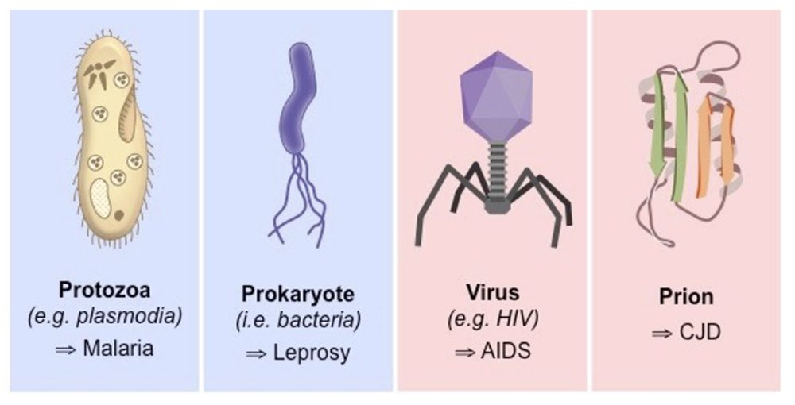
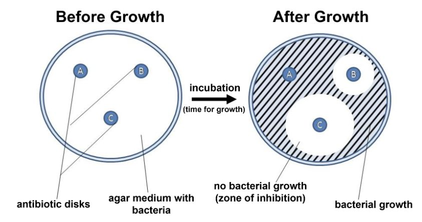
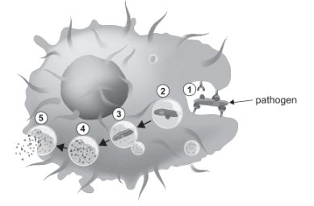
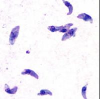
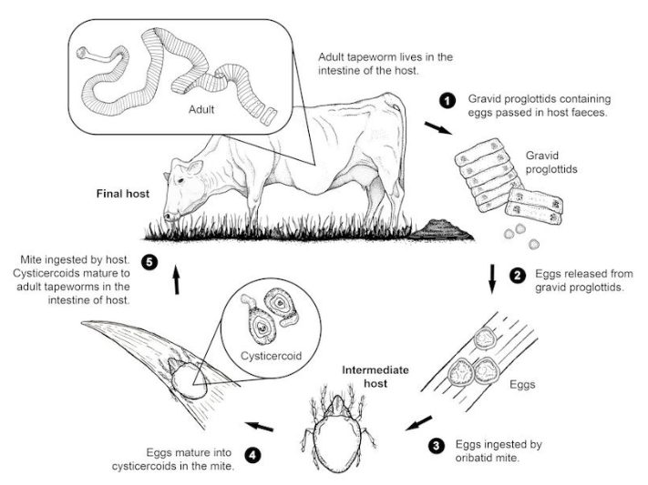
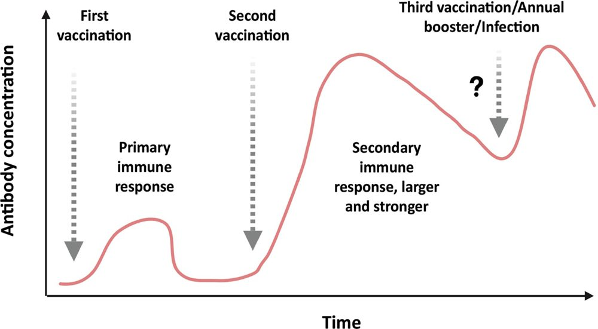

Section A: Multiple choice (10 marks)
The diagram below shows several examples of pathogenic agents.

Which of the pathogenic agents shown in the diagram is acellular and inhabits host cells to reproduce?
Viruses are not cells, and they can only reproduce inside host cells. (Prions are also acellular, but they don't reproduce inside cells.)
A cow was infected by a pathogen causing disease. The pathogen was isolated so it could be identified. Under the microscope it had a nucleus and a distinct cell wall. Based on this information, the pathogen could be
A nucleus means it is eukaryotic (not a bacterium or virus); a cell wall means it is a fungus rather than a protist.
Zika fever is a viral disease passed from an infected person to an uninfected person by the Aedes mosquito. What mode of transmission is involved?
COVID-19 was first identified in Wuhan, China in December 2019. It then spread across Asia and worldwide in early 2020. How would COVID-19 be classified in December 2019 and then in 2020?
Antiseptics and disinfectants are used to control harmful microorganisms. Which of the following statements is true about the use of these chemicals?

An experiment was done to find which antibiotic was most effective at inhibiting the growth of the bacterium Staphylococcus epidermidis. The results are shown above. Which antibiotic was the least effective and should not be used to treat it?
The bacteria grew right up to the tetracycline disc: there was no zone of inhibition.
Lysozyme is an enzyme found in tears. It breaks open bacterial cells, leading to their death. Which line of defence does lysozyme belong to?

The diagram shows the process of phagocytosis. What is happening at position 3?
The third line of defence involves specialised white blood cells called B and T cells. They are part of the adaptive immune response and target specific antigens. Which of the following statements about these cells is true?
A mother who is recovering from COVID-19 is breastfeeding her newborn baby. The baby receives protection from the COVID virus. This is an example of
The baby receives ready-made antibodies (passive) in breast milk (natural).
Section B: Short answer (22 marks)
Define the term "disease".
A disease is any condition that impairs the normal functioning of an organism.
A patient has a bacterial infection. A swab was taken and sent to the laboratory. Outline 3 ways the bacteria can be identified using the sample from the swab.
- Shape: round (cocci), rod-shaped (bacilli) or spiral (1 mark).
- Gram stain: Gram-negative bacteria stain pink and Gram-positive bacteria stain purple (1 mark).
- Plating: the colour and appearance of their colonies when grown on agar plates (1 mark).
Staphylococcus aureus is a bacterium that causes skin infections, resulting in swelling and redness at the site of infection. These are signs of inflammation. Describe what happens to cause inflammation.
- Cells (e.g. mast cells) release histamines when they encounter pathogens or damage (1 mark).
- Histamines increase blood flow to the area, bringing in white blood cells and repair cells. The extra blood flow makes the area red, hot, painful and swollen (1 mark).
Question 4 (8 marks)
Case study: toxoplasmosis
Toxoplasmosis is an infection caused by a parasite called Toxoplasma gondii. This single-celled eukaryotic organism is found throughout the world and tends to infect birds and mammals. The parasite forms egg-like structures called oocysts, which must be ingested, usually in uncooked or raw meat or in animal faeces. Symptoms are usually mild and include swollen glands, muscle pain and headaches. However, the effects on an unborn foetus can be serious, including intellectual disability and liver damage.

Using information from the case study, what type of pathogen causes toxoplasmosis? Use evidence to support your answer.
A protozoan (protist). The case study says it is a single-celled eukaryotic organism, and the image shows a single eukaryotic cell with no cell wall.
Outline 2 methods that could be used to stop transmission between infected and non-infected individuals.
Any two, for example:
- Cook meat thoroughly before eating it, to kill the parasite.
- Wash hands thoroughly after contact with animal faeces, so the parasite is not ingested.
- Use protective equipment (e.g. gloves) when handling raw meat or cleaning litter trays.
- General controls such as case identification, isolation or quarantine.
Would antibiotics be an effective treatment for someone with this disease? Explain.
No (1 mark). Antibiotics target bacteria, which are prokaryotic, but Toxoplasma is a protozoan, which is eukaryotic. Antiprotozoal medicines are designed to treat protozoal infections (1 mark).
Once the Toxoplasma gondii parasite has entered the body, the third line of defence becomes important in controlling and removing it. Outline how B and T cells respond to the pathogen.
- The third line of defence (adaptive immune response) is specific to the pathogen's antigens. B and T lymphocytes recognise and react to the specific pathogen, and form memory cells for future encounters (1 mark).
- B cells (as plasma cells) produce antibodies that target specific antigens on Toxoplasma gondii (1 mark).
- T cells regulate the response: T helper cells release chemicals that stimulate B cells to produce antibodies and stimulate other defences such as phagocytosis (1 mark).
Question 5 (2 marks)
The diagram below shows the life cycle of a tapeworm.

Outline two adaptations that let a tapeworm thrive in the human gut.
- It has a ring of suckers (and hooks) that attach it to the intestinal wall (1 mark).
- It feeds on digested food in the gut, absorbing nutrients through its outer surface (1 mark).
Question 6 (6 marks)
Amid the COVID-19 pandemic, scientists and pharmaceutical companies worked at an unprecedented pace to develop vaccines. Released in late 2020 and early 2021, these vaccines aimed to provide immunity against the SARS-CoV-2 virus, which causes COVID-19.
Why did governments choose to mandate COVID vaccination, rather than relying only on individual decisions?
- Mandating vaccination gives widespread coverage, to achieve herd immunity: when a large percentage of the population is immune, the spread of the disease is reduced (1 mark).
- Governments prioritise public health. Herd immunity protects people who can't be vaccinated or who have weak immune systems (1 mark).
The graph shows when a person received their COVID vaccination, and an exposure to the virus six months later.

How does the immune response to a vaccination differ from the immune response to a secondary exposure to a virus?
- Vaccination (primary response): a weakened or inactivated virus (or part of it) stimulates an immune response without causing illness. Antibodies are produced more slowly and in smaller amounts, and memory cells are made (1 mark).
- Secondary exposure: memory cells from the vaccination recognise the virus, so the response is faster and greater: more antibodies are produced more quickly (1 mark).
Cytotoxic T cells are the body's natural defence against viruses. Explain how cytotoxic T cells would target and destroy SARS-CoV-2.
- Cytotoxic T cells recognise and target the specific body cells infected with the virus (1 mark).
- They kill the infected cells by releasing powerful enzymes onto the cell membrane: perforin makes a hole in the membrane, which causes the cell to die (1 mark).